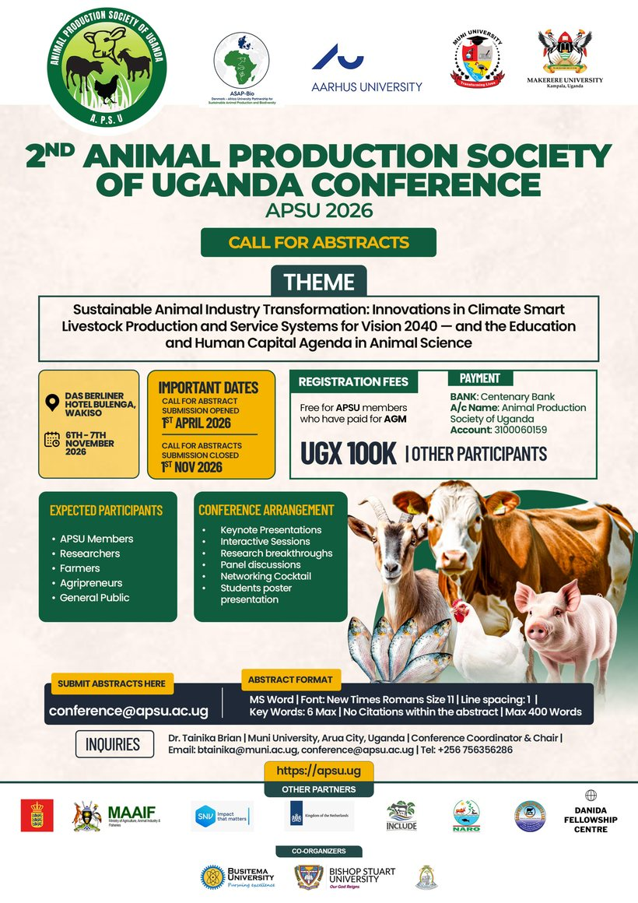

Uganda · 6–7 November 2026, co-organised by ASAP-Bio and the Animal Production Society of Uganda.
ASAP-Bio is partnering with the Animal Production Society of Uganda (APSU) to co-organise its 2nd Scientific Conference and 5th Annual General Meeting, at Das Berliner Hotel, Wakiso. Together we have added an education and human-capital dimension to the conference theme, and we are opening the floor to one urgent question: is what we teach keeping pace with how livestock systems are changing?
Climate change, disease, digitalisation and One Health are reshaping animal production faster than most curricula can follow. If you teach, research or study animal science, this is your platform. We especially welcome abstracts on:
Bring data, a redesigned course, or a bold idea, we want to hear it. Abstract submissions close 1 November 2026.

Selected education abstracts will run through the programme, alongside a plenary talk and a dedicated morning of panel discussions.
Presentations on animal-science education, curriculum fit for purpose, and the links between the ISAPS themes and teaching, woven into the scientific programme.
A scene-setting talk for the whole conference: what does the livestock sector need from university curricula, and are we delivering it?
A dedicated half-day of panel discussions between farmers, veterinary services, agribusiness and universities, with comparative voices from Ethiopia and Kenya, ending in a shared set of curriculum priorities for Uganda.